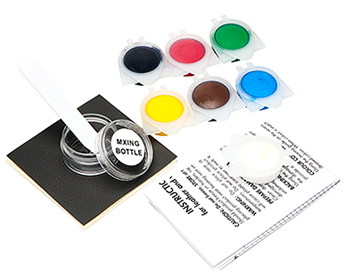

¡Dale a tus cosas de cuero una segunda vida!

Kit de cuero liquido Leather Kit PRO - es un innovador material de polímero a base de agua, caucho y colorantes.
Tiene un efecto que aprieta y "regenera" y está destinado a la reparación de cualquier producto hecho de cuero genuino y sustitutos de cuero.
Aplicación de Leather Kit PRO no requiere habilidades especiales: solo necesita elegir el color correcto y aplicar la pasta al área dañada. Después de unos minutos, la cosa se verá como nueva!


 Rozaduras
Rozaduras
 Cortaduras
Cortaduras
 Grietas
Grietas
 Agujeros
Agujeros
 Rayaduras
Rayaduras
 Y otros
Y otros 
Durante la limpieza, a menudo se nos pide que reparemos uno u otro mueble.
Después de una cuidadosa investigación del mercado, elegimos el Leather Kit PRO: una buena paleta y un sistema de mezcla detallado permiten lograr un 100% de color. Los kits también lleva telas especiales que ayudarán a la nueva piel a dar la textura de la antigua: lisa, acanalada, texturizada, etc.
La calidad de la mezcla en sí a la altura. Recomiendo!